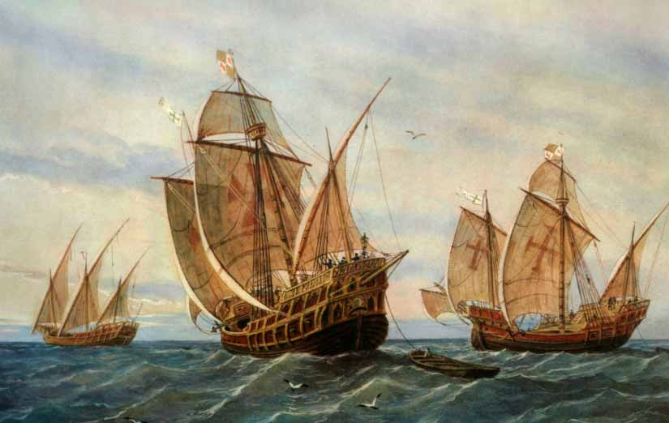

Première rencontre
Mais qui a donc découvert l’Amérique?
Regarde ce dessin. Qui est-ce?
Tu sais comment il s’appelle?
Mais qui a donc découvert l’Amérique?
Regarde ce dessin. Qui est-ce?
Tu sais comment il s’appelle?
Voici la réponse:
Christophe Colomb, un navigateur gênois, voulait découvrir la route des Indes sans passer par l’Afrique, en traversant l’Atlantique. Il demande au roi du Portugal de bien vouloir lui prêter l’argent et des bateaux pour son expédition. Cependant le roi ne veut pas. Christophe Colomb va voir les rois catholiques pour leur demander la même chose, mais ils ne sont pas tout à fait d’accord car ils pensent que c’est une expédition très risquée et c’est finalement Isabelle la Catholique qui acceptera et qui va l’aider à monter définitivement son expédition.

Il va organiser tout son voyage depuis le monastère de la Rábida. Il part du port de Palos de la Frontera (Huelva) avec les frères Pinzón, le 3 août 1492 avec trois bateaux et plus de 100 hommes d’équipage sur la Pinta, la Niña et la Santa María. Dans la nuit du 12 octobre 1492, Rodrigo de Triana voit la terre, ils arrivent sur une île dans les Bahamas, elle s’appelle Guanahani. Colomb pense qu’ il est arrivé aux Indes, c’est son premier voyage.
Il organisera trois autres voyages vers ce Nouveau Monde.
Comme le voyage avait coûté beaucoup d’argent, il recherche de l’or. Le 28 octobre 1492, il arrive sur l’île Jeanne (Cuba) puis il va sur une autre île qui s’appelle Ayti en langage indigène (Haïti) mais qu’il appelera Hispaniola et où il trouve des grandes quantités d’or.
En dehors de l'or, d'autres choses sont découvertes, dont de la nourriture, inconnue jusqu'à présent. Testez si vous pouvez identifier certains de ces aliments.
Quand Christophe Colomb arrive en Amérique, le continente était déjâ peuplé depuis très longtemps. Les personnes qui arrivent sur ces territoires forment des colonies et revendiquent ces terres comme appartenant à leur pays d’origine. Cette action s’appelle la colonisation.
Les indigènes souffrent de la colonisation car ils sont explulsés de leurs terres. On les oblige aussi à changer de religión. Beaucoup meurent à cause des maladies que les européens leur transmettent.
L’Espagne doit orgsaniser le contrôle de ces nouveaux pays situés en Amérique centrale et Amérique du sud. Ils doivent nommer des gouverneurs et des représentants du roi. Il faut de la main d’oeuvre donc la traite des esclaves avec l’Afrique commence. Le commerce se développe et il doit aussi être contrôlé par la Casa de Contratación.
|
|
|
Obra publicada con Licencia Creative Commons Reconocimiento Compartir igual 4.0